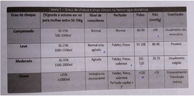
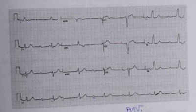
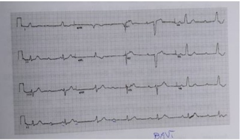

Com a posição ereta do ser humano, desenvolveu-se o assoalho pélvico como estrutura de sustentação para evitar o prolapso dos órgão pélvicos. O equilíbrio entre arcabouço ósseo e tecido bromuscular permite a manutenção das funções orgânicas. Em relação à anatomia e fisiologia pélvicas na mulher, assinale a alternativa ERRADA:
O conhecimento da anatomia pélvica é fundamental na compreensão da siologia obstétrica e nas abordagens ginecológicas, diminuindo o risco de danos a vísceras e a estruturas nervosas e vasculares. Sobre a anatomia pélvica feminina, assinale a alternativa CORRETA:
Você foi solicitado a comparecer ao alojamento conjunto para avaliar um sangramento em puérpera 6 horas após parto normal induzido. É o primeiro parto de mulher de 20 anos, sem comorbidades, que foi induzido porque a gestação alcançou 41 semanas de gravidez e não havia sinais de parto. A puérpera estava orientada no tempo e espaço, pálida e sudorética, pulso no, com frequência cardíaca de 125bpm, pressão arterial de 100x60mmHg, útero hipotônico e com sangramento vermelho vivo vazando o absorvente e molhando o lençol. Considerando os dados obtidos, a tabela de grau de choque fornecida abaixo e o cálculo do índice de choque, assinale a alternativa CORRETA.

Mulher de 45 anos é submetida a histerectomia abdominal total com salpingectomia pro lática, para tratamento de grande mioma transmural na parede lateral esquerda do útero. No pós-operatório foi identificado que houve lesão ureteral durante a cirurgia. Assinale o tempo cirúrgico que MAIS PROVAVELMENTE está associado a esta lesão.
Mulher de 23 anos, primípara, no 2° dia após o parto relata preocupação quanto ao volume e composição do leite materno. Apresenta as mamas ácidas e está amamentando em livre demanda. Com relação à amamentação, assinale a opção CORRETA quanto às orientações a serem dadas a esta paciente.
Sobre as modificações adaptativas do organismo materno durante a gravidez, assinale a opção ERRADA:
Paciente de 26 anos, primigesta, previamente hígida, acompanhada em Centro de Saúde, com 32 semanas de gestação evolui com aumento pressórico. Refere que nas últimas semanas compareceu à unidade de saúde onde foram aferidas várias medidas pressóricas acima de 140x90mmHg. Foi solicitada Proteinúria de 24 horas com resultado de 395mg/24h. A relação proteinúria/creatininúria (mg/dL) da última semana resultou em 0,25. Acerca da CONDUÇÃO ADEQUADA para essa paciente, assinale a alternativa CORRETA:
RDF, 51 anos se apresenta no ambulatório de climatério relatando última menstruação há dois anos e com queixas de ondas de calor intensas, insônia, irritabilidade e diminuição de desejo sexual. Diz que sua qualidade de vida está muito prejudicada. É sedentária, tem IMC= 26kg/m², exame clínico, mamário e ginecológico sem alterações. Citologia do colo negativa. A paciente se mostra desejosa de fazer uso de terapia hormonal da menopausa (THM). Qual a PROPEDÊUTICA BÁSICA antes de iniciar a THM?
O ciclo menstrual é um conjunto de eventos endócrinos interdependentes do sistema hipotálamo-hipó se-ovariano que levam a modi cações siológicas no organismo da mulher visando à ovulação. Ao nal da fase folicular, as células da granulosa passam a expressar também receptores na superfície das células da granulosa, associado à redução dos receptores de hormônio folículo estimulante (FSH) pelo mecanismo de autorregulação, leva à mudança no padrão de dependência do folículo do FSH para uma fase LH-dependente. Esta modi cação do padrão de resposta do folículo ao LH é responsável:
Paciente procura a Maternidade, insegura com a orientação recebida na Unidade Básica de Saúde (UBS) onde realiza o pré- natal de risco habitual. Apresentou VDRL reativo até 1/16 e teste rápido para treponema positivo, sem histórico de tratamento prévio; foi solicitado o VDRL para o parceiro que veio negativo e a recomendação foi de que só ela deveria tratar já que o parceiro não apresentava sí lis. Considerando o diagnóstico de sí lis para a paciente e iniciando logo seu tratamento, assinale a conduta CORRETA em relação a seu parceiro sexual.
Paciente de 28 anos, G2PC1A0, IG 31 semanas, encaminhada ao Pré-Natal de Alto Risco (PNAR) devido a quadro de crescimento intrauterino restrito (CIUR). Na história clínica: tabagismo 10 cigarros/dia desde a adolescência e lho anterior nasceu com 34 semanas devido a quadro de CIUR. Não apresentava doenças sistêmicas. Ao exame clínico apresentava UF de 28cm e BCF de 132bpm. O último US era de 27 semanas com peso fetal estimado entre os percentis 3 e 10, sem Doppler. Solicitado ultrassonogra a com Doppler na urgência que confirmou o CIUR. Assinale a opção com a avaliação pela Dopplervelocimetria que, se estiver alterada, define a necessidade da interromper a gestação:
Sobre o controle do sangramento uterino anormal agudo (SUA-a), assinale a alternativa CORRETA:
Paciente de 18 anos, nuligesta, deseja iniciar atividade sexual e vem a consulta médica para orientações sobre contracepção hormonal e métodos de barreira. Assinale a orientação CORRETA sobre os métodos contraceptivos:
Paciente de 35 anos, vai à consulta ginecológica queixando-se de lesões elevadas, pruriginosas em região vulvar. Reclama ainda de constrangimento na relação sexual devido a essas lesões. Última citologia oncótica há três anos: Negativa para displasias. Ao exame: Apresenta quatro lesões, elevadas, serrilhadas, discretamente endurecidas, medindo cerca de 0,5cm cada, em introito vaginal, períneo, próximo ao clitóris e vulva. No exame especular apresenta duas dessas lesões, com 0,6cm cada, na parede vaginal lateral. Colo normal, sem áreas acetobrancas e teste de Schiller negativo. Assinale a alternativa que possui a MELHOR CONDUTA sobre o caso:
Paciente homem transgênero, 27 anos, nome não reti cado, procura o ginecologista pela primeira vez. Há seis anos faz uso de testosterona, com ciclos atuais de 21 dias. Está em amenorreia desde o início da hormonização e refere cólicas abdominais leves de acometimento coincidentes ao nal de cada ciclo. A rma possuir corrimentos siológicos e nega outras queixas. Nega morbidades e uso de outros medicamentos. Nega cirurgias prévias, mas está se preparando para realização de mastectomia masculinizadora. Trouxe exames laboratoriais solicitados por outro pro ssional: Hb 15,5g/dL; Ht 43%; Hm 5,2 milhões/mm³; Plaquetas 250.000/mm³; TGO 24U/L; TGP 17U/L; testosterona total: 653ng/dL (V.R.: 165 - 753ng/dL). Ao exame físico: PA 125x85mmHg, FC 72bpm, abdome livre, indolor à palpação, sem visceromegalias palpáveis. Sobre a assistência integral ao paciente, é CORRETO afirmar que
Revisar: possível letra faltando em enunciado
A Organização Mundial da Saúde (OMS) divulgou na sexta-feira 17 de junho de 2022 revisão mundial sobre saúde mental. Este levantamento aponta que em 2019, quase um bilhão de pessoas viviam com um transtorno mental. Os transtornos mentais são a principal causa de incapacidade, causando um em cada seis anos vividos com incapacidade. A relação entre transtorno mental e trabalho é reconhecida na Lista de Doenças Relacionadas ao Trabalho (LDRT). Qual das doenças abaixo relacionadas NÃO É reconhecida como LDRT:
Com relação à organização da atenção à saúde dos trabalhadores no Brasil é CORRETO afirmar:
A doença monkeypox (varíola dos macacos) foi identi cada em 1958, e é endêmica em alguns países africanos. Em maio de 2022, foram identi cados casos na Europa e a doença disseminou-se por vários países, incluindo o Brasil. Sobre a monkeypox é CORRETO afirmar:
Existem várias definições do que sejam os determinantes sociais de saúde (DSS) e todas trazem a ideia de que "as condições de vida e trabalho dos indivíduos e de grupos da população estão relacionadas com sua situação de saúde". O modelo de Dahlgren e Whitehead dispõe os DSS em camadas superpostas. Constitui camada do modelo:
Sinais precoces de Transtorno do Espectro Autista (TEA) podem ser observados desde os primeiros meses de vida e devem ser investigados durante as consultas de puericultura. Todo contato com a criança deve ser visto como um momento interventivo, de avaliação e acompanhamento de seu desenvolvimento. Qual dos eventos abaixo NÃO pode ser considerado sinal precoce sugestivo de alteração no desenvolvimento neuropsicomotor:
A estrati cação de risco obstétrico durante a assistência pré-natal é um dos fatores determinantes para a redução da mortalidade materno-fetal. De acordo com o Manual de Gestação de Alto Risco do Ministério da Saúde, qual das opções abaixo NÃO É característica individual e/ou condição sociodemográ ca que deve ser considerada como critério de encaminhamento de gestante/puérpera à unidade de maior nível hierárquico de pré-natal:
Revisar: possível letra faltando em enunciado
A transição demográ ca e epidemiológica no Brasil gerou uma situação de saúde que exige que o SUS responda pela tripla carga de doença. NÃO CONSTITUI característica da tripla carga de doença:
Revisar: possível letra faltando em enunciado
Levando-se em consideração a Linha de Cuidado da Hipertensão Arterial Sistêmica (HAS) no adulto, do ministério da Saúde, é CORRETO afirmar:
Primípara, 20 semanas de gestação, compareceu em UBS para realização de sua primeira consulta de pré-natal. Durante avaliação foi ofertado teste rápido para sí lis cujo resultado foi positivo. Demais testes realizados (HIV, hepatites B e C) negativos. Paciente negou sinais e sintomas de doença ativa e tratamento anterior para Infecção Sexualmente Transmissível - IST. Prescrito esquema com doses semanais de 2.400.000 UI de penicilina benzatina durante 3 semanas, realizadas e checadas em cartão de pré-natal nos dias 0, 7 e 14, sendo a dose 0 administrada no dia do diagnóstico. Solicitados exames laboratoriais de rotina do primeiro e segundo trimestres de pré-natal, VDRL de controle e ultrassonografia morfológica. Com 23 semanas paciente evoluiu com parto prematuro e duas semanas após recém nascido evoluiu para óbito. Sobre o caso acima é CORRETO afirmar:
A estratégia que objetiva aumentar a resolutividade e capacidade de resposta das equipes de saúde da família aos problemas da população e é composta por pro ssionais de diferentes áreas do conhecimento que atuam de maneira integrada às equipes de saúde da família, recebe o nome de:
Com relação às atribuições da direção estadual do SUS, assinale a alternativa CORRETA.
Pesquisa realizada para avaliar um novo método de diagnóstico para COVID 19 identi cou que o seu valor preditivo positivo era mais alto do que o observado no método de referência (padrão-ouro). Comparando o novo método com o método de referência, a MAIOR PROBABILIDADE é de:
A portaria nº 2.979, de 12 de novembro de 2019 institui o Programa Previne Brasil, que estabelece um novo modelo de nanciamento de custeio da Atenção Primária à Saúde (APS) no âmbito do Sistema Único de Saúde (SUS). O modelo de nanciamento em saúde considera o pagamento do conjunto dos sete indicadores que compõem o Pagamento por Desempenho da Atenção Primária à Saúde (APS), permitindo o nanciamento de ações estratégicas para o alcance de melhores resultados em saúde, considerando a abrangência da APS. Recentemente, o Ministério da Saúde apresentou uma atualização revisada desses indicadores, tendo como referência o ano de 2022, conforme disposto pela Portaria GM/MS 102, de 20 de janeiro de 2022. Os indicadores foram ajustados para atender às Ações Estratégicas dos programas Prénatal, Saúde da Mulher, Saúde da Criança e Condições Crônicas. A seguir assinale a opção que NÃO CONFIGURA um dos sete indicadores:
O Programa Nacional de Controle da Tuberculose (PNCT) tem como meta eliminar a tuberculose (TB) como problema de saúde pública no Brasil. Estratégias que fortaleçam o acesso à prevenção, ao diagnóstico e ao tratamento da doença foram traçadas para este objetivo, dentre elas o diagnóstico precoce de todas as formas de tuberculose, incluindo a Infecção Latente pelo Micobacterium tuberculosis (ILTB). Quanto ao diagnóstico da ILTB é CORRETO afirmar:
A bromialgia é um diagnóstico frequente na atenção primária. A dor musculoesquelética difusa e crônica é a principal queixa relacionada. Sobre esta condição é ERRADO afirmar:
Homem de 72 anos encontra-se em tratamento hospitalar de endocardite infecciosa. O médico plantonista foi acionado porque o paciente se queixou de dispneia. Ao exame físico, PA 100/62mmHg, FC 36bpm, FR 28ipm, SpO2 89% (em ar ambiente). O exame respiratório revelou crepitações teleinspiratórias em ambas as bases pulmonares. O exame cardiovascular revelou ritmo cardíaco regular e bradicárdico, sem sopro. As extremidades estavam aquecidas, e o enchimento capilar era imediato. O ECG pode ser visto abaixo: Assinale a alternativa que apresenta um tratamento de urgência provavelmente INEFICAZ nesse paciente:

Homem de 72 anos encontra-se em tratamento hospitalar de endocardite infecciosa. O médico plantonista foi acionado porque o paciente se queixou de dispneia. Ao exame físico, PA 100/62mmHg, FC 36bpm, FR 28ipm, SpO2 89% (em ar ambiente). O exame respiratório revelou crepitações teleinspiratórias em ambas as bases pulmonares. O exame cardiovascular revelou ritmo cardíaco regular e bradicárdico, sem sopro. As extremidades estavam aquecidas, e o enchimento capilar era imediato. O ECG pode ser visto abaixo: Assinale a alternativa que apresenta a complicação da endocardite infecciosa MAIS PROVÁVEL de ter ocorrido nesse paciente:

Homem de 45 anos realiza exame periódico de saúde na UBS. Queixa-se de falta de energia no período da tarde e sonolência durante leituras e programas de televisão. Nega uso de medicamentos, tabagismo ou etilismo. Ao exame físico, PA 200/110mmHg e IMC 31,3kg/m². Sem outras anormalidades. O paciente cou surpreso e a rmou que a PA sempre fora normal, inclusive no exame ocupacional realizado há seis meses. Aferições da PA realizadas no domicílio por aparelho automático nos três dias seguintes confirmaram os níveis medidos na USB. Assinale a alternativa que apresenta um teste propedêutico INADEQUADO na investigação inicial desse caso:
Homem de 67 anos é levado ao PS com a queixa de dispneia intensa ao repouso. Apresenta tosse produtiva com escarro amarelo, coriza, dor de garganta há dois dias e dispneia progressiva desde então. Não há relato de febre ou dor torácica. Era assintomático antes do quadro clínico atual. Nega comorbidades conhecidas, internações prévias ou uso de antimicrobianos no último ano. É tabagista (42 maços-ano) e etilista. Ao exame, PA 130/86mmHg, FC 102bpm, FR 22ipm, SpO2 90% (em ar ambiente). O exame respiratório revelou taquipneia, aumento do tempo expiratório e sibilos expiratórios polifônicos difusamente nos hemitórax. Recebeu salbutamol e ipratrópio pela via inalatória (três ciclos), hidrocortisona IV e oxigenoterapia pelo cateter nasal a 2L/min, sem melhora. A radiogra a do tórax revelou reti cação das cúpulas diafragmáticas e hipertransparência dos campos pulmonares. Testes rápidos para in uenza e SARS-CoV-2 resultaram negativos. EXAMES DE LABORATÓRIO: Hg 15,4g/dL; LG 10.350/mm³; NS 7.650/mm³; PLQ 154.000/mm³; PCR 54mg/L; creat 0,9mg/dL. Assinale a alternativa que apresenta o tratamento farmacológico sequencial MAIS ADEQUADO nesse paciente:
Homem de 67 anos é levado ao PS com a queixa de dispneia intensa ao repouso. Apresenta tosse produtiva com escarro amarelo, coriza, dor de garganta há dois dias e dispneia progressiva desde então. Não há relato de febre ou dor torácica. Era assintomático antes do quadro clínico atual. Nega comorbidades conhecidas, internações prévias ou uso de antimicrobianos no último ano. É tabagista (42 maços-ano) e etilista. Ao exame, PA 130/86mmHg, FC 102bpm, FR 22ipm, SpO2 90% (em ar ambiente). O exame respiratório revelou taquipneia, aumento do tempo expiratório e sibilos expiratórios polifônicos difusamente nos hemitórax. Recebeu salbutamol e ipratrópio pela via inalatória (três ciclos), hidrocortisona IV e oxigenoterapia pelo cateter nasal a 2L/min, sem melhora. A radiogra a do tórax revelou reti cação das cúpulas diafragmáticas e hipertransparência dos campos pulmonares. Testes rápidos para in uenza e SARS-CoV-2 resultaram negativos. EXAMES DE LABORATÓRIO: Hg 15,4g/dL; LG 10.350/mm³; NS 7.650/mm³; PLQ 154.000/mm³; PCR 54mg/L; creat 0,9mg/dL. Assinale a alternativa que apresenta o tratamento antimicrobiano MAIS ADEQUADO nesse paciente:
Mulher de 63 anos apresenta diarreia aguda há três dias, com oito evacuações ao dia, de fezes amolecidas e contendo sangue. Relata dor na fossa ilíaca esquerda, náuseas, vômitos e hiporexia. Possui doença de Parkinson e HAS, e faz uso de anlodipino e levodopa-benserazida. Por causa de prostração, foi levada ao PS. Ao exame físico, PA 100/70mmHg, FC 88bpm, FR 20ipm, SpO2 98% (em ar ambiente). Apresenta-se alerta e orientada. As mucosas estão coradas e desidratadas. O exame abdominal revelou dor à palpação difusa, sem sinais de irritação peritoneal. EXAMES DE LABORATÓRIO: HG 13,4g/dL; LG 12.870/mm³; NS 9.740/mm³; PLQ 187.000/mm3; PCR 34mg/L; creat 1,8mg/dL; ureia 98mg/dL; sódio 124mEq/L; potássio 4,8mEq/L; BT 0,6mg/dL. Assinale a alternativa que apresenta a conduta MAIS ADEQUADA nesse caso:
Mulher de 63 anos apresenta diarreia aguda há três dias, com oito evacuações ao dia, de fezes amolecidas e contendo sangue. Relata dor na fossa ilíaca esquerda, náuseas, vômitos e hiporexia. Possui doença de Parkinson e HAS, e faz uso de anlodipino e levodopa-benserazida. Por causa de prostração, foi levada ao PS. Ao exame físico, PA 100/70mmHg, FC 88bpm, FR 20ipm, SpO2 98% (em ar ambiente). Apresenta-se alerta e orientada. As mucosas estão coradas e desidratadas. O exame abdominal revelou dor à palpação difusa, sem sinais de irritação peritoneal. EXAMES DE LABORATÓRIO: HG 13,4g/dL; LG 12.870/mm³; NS 9.740/mm³; PLQ 187.000/mm3; PCR 34mg/L; creat 1,8mg/dL; ureia 98mg/dL; sódio 124mEq/L; potássio 4,8mEq/L; BT 0,6mg/dL. Assinale a alternativa que apresenta uma a rmação CORRETA sobre a fisiopatologia da hiponatremia apresentada pela paciente.
Mulher de 18 anos apresenta edema acentuado dos membros inferiores. Desconhece comorbidades e nega o uso de medicamentos. Ao exame físico, PA 150/94mmHg, FC 76bpm, FR 16ipm, SpO2 95% (em ar ambiente). Há edema palpebral, na parede abdominal e nos membros inferiores. Palpam-se pequenos linfonodos indolores nas cadeias cervicais, axilares e inguinais. Os sons respiratórios estão reduzidos em ambas as bases dos hemitórax. Algumas articulações interfalangeanas proximais apresentam-se com o volume aumentado, hiperemiadas e dolorosas à palpação. EXAMES DE LABORATÓRIO: Hg 12,2g/dL; LG 1890/mm³; NS 896/mm³; linfócitos 320/mm³; Plaq 109.800/mm³; creat 2,8mg/dL; sódio 135mEq/L; potássio 4,8mEq/L; LDH 540U/L; ácido úrico 9,3mg/dL; albumina sérica 2,3g/dL; C3 26; C4 3; FAN 1/320 padrão nuclear homogêneo; exame de urina: proteína 3+; hemoglobina negativo; 8 leucócitos/campo; 3 hemácias/campo. Assinale a alternativa que apresenta uma conduta INADEQUADA nesse caso:
Mulher de 18 anos apresenta edema acentuado dos membros inferiores. Desconhece comorbidades e nega o uso de medicamentos. Ao exame físico, PA 150/94mmHg, FC 76bpm, FR 16ipm, SpO2 95% (em ar ambiente). Há edema palpebral, na parede abdominal e nos membros inferiores. Palpam-se pequenos linfonodos indolores nas cadeias cervicais, axilares e inguinais. Os sons respiratórios estão reduzidos em ambas as bases dos hemitórax. Algumas articulações interfalangeanas proximais apresentam-se com o volume aumentado, hiperemiadas e dolorosas à palpação. EXAMES DE LABORATÓRIO: Hg 12,2g/dL; LG 1890/mm³; NS 896/mm³; linfócitos 320/mm³; Plaq 109.800/mm³; creat 2,8mg/dL; sódio 135mEq/L; potássio 4,8mEq/L; LDH 540U/L; ácido úrico 9,3mg/dL; albumina sérica 2,3g/dL; C3 26; C4 3; FAN 1/320 padrão nuclear homogêneo; exame de urina: proteína 3+; hemoglobina negativo; 8 leucócitos/campo; 3 hemácias/campo. Assinale a alternativa que apresenta o diagnóstico MAIS PROVÁVEL nesse caso:
Mulher de 35 anos consultou há duas semanas queixando-se de constipação intestinal de difícil controle. Ao exame físico, apresentava pequeno bócio tireoidiano. Trouxe resultados de TSH e T4 livre realizados no ano anterior com os seguintes valores, respectivamente: 6,3mU/L e 0,9ng/dL. Foram solicitados nova função tireoidiana e um teste de beta-HCG, feitas orientações dietéticas pertinentes e recomendação de aumento da ingestão hídrica. A paciente retorna mantendo a queixa de alteração do hábito intestinal e traz os novos resultados de exames: TSH = 7,2microUI/mL; T4 livre = 1,0ng/dL; beta- HCG = não detectado. Assinale a alternativa que apresenta a conduta MAIS ADEQUADA para essa paciente:
Homem de 58 anos vai ao consultório para avaliação periódica de saúde. É portador de HAS e doença arterial obstrutiva periférica. É ex-tabagista. Está em uso domiciliar de losartana 50mg duas vezes ao dia. Ao exame físico, PA 136 x 83mmHg. EXAMES DE LABORATÓRIO: creat 0,6mg/dL; potássio 4,1 mEq/L; sódio 131mEq/L; LDL-colesterol 101mg/dL. Assinale a alternativa que apresenta a conduta MAIS ADEQUADA para esse paciente:
Mulher de 25 anos queixa-se de dor e vermelhidão na face anterior da perna E. Desconhece comorbidades e faz uso apenas de anticoncepcional oral combinado (ACO). Ao exame físico, apresenta área de edema e hiperemia na face anterior da perna E. A palpação revela nódulos subcutâneos dolorosos nesse local. Assinale a alternativa que NÃO apresenta uma hipótese diagnóstica adequada para a causa do quadro clínico apresentado por essa paciente:
Mulher de 29 anos queixa-se de lombalgia esquerda iniciada no dia anterior, após a realização de exercícios físicos intensos. Relata que a dor irradia pela região lateral da coxa esquerda até o pé e apresenta intensidade 4/10. Nega outros sintomas, incluindo febre, anormalidades intestinais ou urinárias. Nega comorbidades conhecidas. Ao exame físico, o teste de elevação da perna esquerda reproduz a dor do mesmo lado, e o teste com a perna direita não desencadeia nenhuma dor. O exame neurológico não apresenta anormalidades. Assinale a alternativa que apresente a causa MAIS PROVÁVEL do quadro clínico apresentado por essa paciente e a conduta MAIS ADEQUADA:
Homem de 33 anos queixa-se de regurgitação e queimação retroesternal, principalmente no período pós-prandial. Os sintomas iniciaram há algumas semanas e têm se intensi cado nos últimos dias, ocorrendo várias vezes ao dia. Nega tabagismo e relata o consumo de bebidas alcoólicas em pequenas quantidades ocasionalmente. Os pais e os irmãos são saudáveis. O exame físico não apresenta anormalidades. O paciente recebeu orientações comportamentais e dietéticas para controle dos sintomas. Assinale a alternativa que apresenta a conduta MAIS ADEQUADA nesse caso:
Revisar: possível letra faltando em enunciado
Mulher de 24 anos queixa-se de algúria, polaciúria e dor suprapúbica há um dia. Nega outras manifestações, incluindo febre, náuseas e vômitos. Desconhece comorbidades. Apresentou episódio semelhante a este há dois meses, tratou com com sulfametoxazol/trimetoprim por três dias, e apresentou resolução completa dos sintomas naquela ocasião. É casada e faz uso de contraceptivo oral regularmente. Assinale a alternativa CORRETA sobre a propedêutica e o tratamento MAIS ADEQUADOS para essa paciente:
O reparo de feridas é a tentativa dos tecidos lesados em restaurar a função e a estrutura normal após o trauma. Diversas células participam nas diferentes fases da cicatrização. Dentre os tipos celulares abaixo, quais são as predominantes durante a fase inflamatória da cicatrização?
Paciente de 63 anos, sexo masculino, foi submetido a colectomia esquerda sob anestesia geral com relato de perda sanguínea significativa no perioperatório mas sem necessidade da administração de concentrado de hemácias. No pós- operatório imediato foi feita revisão laboratorial que demonstrou: Na: 131mEq/L; K: 5,8mEq/L; CI: 92mEq/L; pH arterial: 7,32; HCO₃; 20mEq/L; PaCO₂: 33mmHg; BE: -4mEq/L; glicemia 190mg%. Considerando os dados apresentados é CORRETO afirmar:
Durante o pré-operatório de pacientes oncológicos que serão submetidos ao tratamento cirúrgico observa-se, com relativa frequência, a ocorrência de hipocalemia. Nestes casos, é CORRETO afirmar que:
A perda volêmica após o trauma desencadeia uma série de eventos compensatórios na tentativa de manter a pressão de perfusão dos órgãos vitais. O tratamento adequado destes pacientes deve levar em consideração estes mecanismos compensatórios. Em um paciente com choque hipovolêmico é CORRETO afirmar:
Os anestésicos locais são utilizados em diferentes procedimentos cirúrgicos e dessa forma o cirurgião deve estar familiarizado com sua farmacodinâmica e farmacocinética. Em relação a estes agentes é CORRETO afirmar:
As doenças cardiovasculares são a principal causa de morte no mundo industrializado, e sua contribuição para a mortalidade perioperatória em operações não cardíacas é significativa. Instrumentos adequados para a estrati cação cardiovascular do risco anestésico estão disponíveis há algum tempo. Um dos instrumentos mais utilizados é o Índice de Risco Cardíaco Revisado que apresenta bom valor para predizer complicações no perioperatório. Em relação ao índice de risco cardíaco revisado, é CORRETO afirmar.
Paciente de 56 anos em pós-operatório imediato de piloroplastia devido a estenose pilórica, vem apresentando vômitos importantes, recorrentes e de difícil controle. Gasometria arterial: pH 7,56; PaCO2 38mmHg; Excesso de base + 8mEq/L; HCO3 34mEq/L; PaO2 110mmHg. A qual distúrbio a gasometria arterial apresentada está relacionada?
Menino de oito anos de idade é levado pelo pai ao serviço de urgência com ferimento em região submentual, que ocorreu ao tentar sair da piscina, batendo o queixo na borda. O ferimento tem 3cm de comprimento por 0,5cm de largura e 0,5cm de profundidade, bordas irregulares, com trabéculas de tecido atravessando de uma margem à outra da ferida. A pele ao redor tem coloração avermelhado-violácea. Essa ferida é MELHOR classificada como:
A solicitação de exames complementares é fundamental no preparo pré-operatório dos pacientes que serão submetidos a procedimento cirúrgico. Em relação aos exames préoperatórios é CORRETO afirmar:
MLS, sexo feminino, 57 anos, trabalhadora rural no norte de Minas, foi encaminhada para cirurgia ambulatorial. Apresentava pápula rósea com cerca de 1cm de diâmetro em região pré- auricular direita, consistência rme, bordas elevadas com depressão central, recoberta com crosta. Relata que a lesão é de crescimento lento, com cerca de dois anos de evolução. Nega prurido e dor no local. Em relação a esta lesão e ao diagnóstico mais provável, é CORRETO afirmar:
Paciente de 57 anos, sexo masculino, admitido no hospital em pré-operatório de câncer gástrico, relatou ao médico ter notado uma redução de 2kg da data da internação até a data da avaliação no leito. Referiu deambulação irregular, por sensação de fraqueza nas pernas e certa di culdade na aceitação da dieta, o que também aconteceu com alguns alimentos no lar, e demandou possíveis ajustes na dieta ofertada. Sabendo-se que a avaliação nutricional do paciente hospitalizado, tal qual o acima relatado, é uma ferramenta essencial para sistematizar e assegurar o cuidado adequado, assinale a alternativa ERRADA:
O antígeno carcinoembrionário (CEA) deve ser solicitado:
RGZ, sexo masculino, 50 anos, empresário, sem comorbidades, procura o hospital com queixa de dor abdominal moderada, iniciada há cerca de 40 minutos, localizada em região periumbilical. A dor está limitando as suas atividades cotidianas. Refere ainda inapetência e febre baixa não termometrada. Considerando-se os dados apresentados, é ERRADO afirmar:
ILG, sexo feminino, 66 anos, hipertensa, em uso de hidroclorotiazida e losartana, foi submetida a laparotomia para realização de gastrectomia subtotal oncológica, sob anestesia geral. O procedimento teve duração de 3 horas e 30 minutos e não houve intercorrências. Optou-se por encaminhar a paciente para leito de terapia semi-intensiva para cuidados pósoperatórios. Assinale a alternativa ERRADA:
Paciente idoso, vitima de acidente automobilístico em alta velocidade foi atendido no PS com quadro de hipotensão arterial, confusão mental, paraplegia com nível sensitivo na altura do umbigo. A radiogra a de tórax não apresentava alterações; o FAST foi negativo e a radiogra a de bacia mostrava fratura com cisalhamento vertical. Qual é a causa, MAIS PROVÁVEL, da instabilidade hemodinâmica:
Em relação aos cuidados com o recém-nascido é CORRETO afirmar:
Em relação aos testes de triagem neonatal para rastreamento de doenças, é ERRADO afirmar:
Com o tema "apoiar a amamentação é cuidar do futuro", o Ministério da Saúde lançou em agosto de 2022, a Campanha Nacional de Amamentação 2022, em alusão à Semana Mundial da Amamentação. O mês de agosto é conhecido como "Agosto Dourado" por simbolizar o incentivo ao aleitamento materno – a cor dourada está relacionada ao padrão ouro de qualidade do leite humano." Fonte: br/assuntos/noticias/2022/agosto/ministerio-da-saude-lancacampanha-na-semana-nacional-de-amamentacao); informação ERRADA sobre o aleitamento materno é:
Em relação às imunizações é ERRADO afirmar:
Você atende na Unidade básica de saúde uma criança de dois anos e seis meses de idade com história de ganho de peso insu ciente e avaliação de peso em escore Z (curvas da OMS) abaixo do escore Z – 3. A equipe de saúde realiza o acompanhamento da família e conseguirá garantir a cesta básica e alimentação adequada para a criança. Os cuidados durante o acompanhamento dessa criança são muito importantes para sua recuperação nutricional. Assinale a alternativa com orientação ERRADA:
Revisar: possível letra faltando em enunciado
Em relação à alimentação do lactente é CORRETO afirmar:
Lactente de dois meses de idade foi atendido na urgência para avaliação de febre, dois picos febris nas últimas 24 horas. Não apresentou sintomas associados, mantendo bom estado geral. Em uso de aleitamento misto (leite materno e fórmula infantil). Não está em uso de nenhuma medicação, exceto antitérmico. Nascido a termo, sem intercorrências no período neonatal. Recebeu as vacinas de dois meses há dois dias. Após avaliação médica, exame físico sem alterações, o paciente foi liberado para casa, e a febre considerada como reação vacinal. No entanto, foi coletado hemograma e observada anemia: Hemoglobina: 9,9g/dL; Hematócrito: 29,1%; Volume corpuscular médio (VCM): 78fL; Hemoglobina Corpuscular Média (HCM): 29pg; Concentração da Hemoglobina Corpuscular Média (CHCM): 33g/dL; RDW 14,3% Assinale a alternativa que apresenta a hipótese diagnóstica MAIS PROVÁVEL para a anemia identificada no paciente:
Paciente de dois anos de idade foi admitido na Unidade de internação de pediatria para investigação de doença renal crônica, ainda sem etiologia definida. Criança veio encaminhada do interior do estado, após constatação de disfunção renal persistente após um episódio de gastroenterite aguda autolimitado. Na última avaliação laboratorial, o ritmo de ltração glomerular do paciente era 40mL/min/1,73m². Assinale a alternativa abaixo que apresenta as PRINCIPAIS ALTERAÇÕES LABORATORIAIS esperadas para esse paciente:
Maria, de oito meses de idade, previamente saudável, está há 72 horas com diarreia líquida com rajas de sangue, tenesmo e vômitos esporádicos. O exame físico mostra bom estado geral, pulso cheio, enchimento capilar de 2 segundos. Eupneica com frequência cardíaca de 130bpm. Assinale a alternativa considerada ERRADA no manejo desta paciente:
Criança de quatro anos de idade é encaminhada ao Posto de Saúde para investigação de tuberculose pulmonar. Relato de contato com o avô, o qual foi recentemente diagnosticado com a doença. Em relação ao diagnóstico da tuberculose nessa criança, é CORRETO afirmar:
Criança de dois anos de idade é atendida no Pronto Atendimento com quadro de febre e lesões vesiculares em face e membros, de surgimento há sete dias. O médico que atende a criança levanta a suspeita de Monkeypox. Em relação à doença, é CORRETO afirmar:
Adolescente de 12 anos de idade procura o Posto de Saúde para atualização do cartão vacinal. A mãe informa que não procurou o Posto de Saúde nos últimos três anos devido à pandemia de Covid-19 e que agora gostaria de regularizar a situação vacinal do seu filho. Em relação à vacinação desse adolescente, é CORRETO afirmar:
As hepatites são comuns nas crianças em todo o mundo, em especial em populações de baixa renda e em áreas de saneamento básico de ciente. Os programas de vacinação contra hepatite ajudam na prevenção. Diante do exposto, assinale a alternativa CORRETA
Revisar: possível letra faltando em enunciado
Febre é uma das queixas mais frequentes em pronto-atendimentos e um dos sintomas que causam maiores preocupações aos pais e responsáveis. Sobre quadros de febre aguda é CORRETO afirmar:
Criança de sete anos de idade é admitida no hospital com quadro de cefaleia, febre e vômitos há dois dias. Há 24 horas observou o surgimento de manchas vermelhas na pele. Ao exame físico apresenta-se alerta e orientada, com equimoses e petéquias em membros inferiores e sinal de Brudzinski positivo. A criança é submetida à punção lombar com o seguinte resultado: aspecto ligeiramente turvo glicose 12mg/dL, proteínas 288mg/dL, 1.420 leucócitos/mm³ (76% neutró los, 24% linfócitos). Gram do líquor: em andamento. Com base nos dados apresentados, assinale a alternativa CORRETA: Respostas: 1 12 23 34 45 56 67